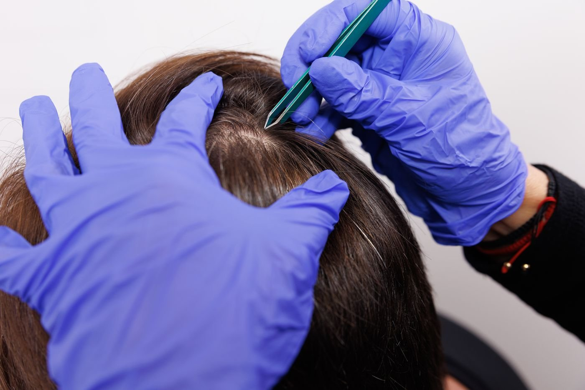

Los paquetes MP
Tres objetivos,
Tres objetivos,
tres combinaciones
Un estudio suelto te da un dato. Un paquete te da el cruce entre varios y la lectura de un especialista — que es donde aparecen las respuestas que un marcador aislado no puede darte. Los tres se acreditan íntegros a tu tratamiento si decides iniciarlo en los 60 días siguientes.

Diagnóstico inicial
Punto de Partida MP
Para quien quiere cuidarse en serio y no sabe por dónde empezar.
- Qué te falta: vitaminas, minerales y micronutrientes
- Qué alimentos te están inflamando
- Si lo que pierdes es grasa o músculo
- Qué suplementos necesitas de verdad
BioScan + InBody + consulta
$540
Ver el paquete →

Diagnóstico para atletas
El más completo
Atleta MP
Para quien ya entrena en serio y lleva tiempo sin subir el techo.
- Tus zonas de entrenamiento medidas, no estimadas
- Tu VO2 max real y tus calorías exactas
- Si la fatiga viene del hierro, la tiroides o el cortisol
- Si estás construyendo músculo o perdiéndolo
Metabólico + sangre + InBody + IV
$895
Ver el paquete →

Diagnóstico completo
Mapa Biológico MP
Para quien lleva años sin que nadie le explique qué le pasa.
- Las cuatro capas: celular, clínica, metabólica y estructural
- Tu edad biológica y qué la está empujando
- Por qué tus análisis «salen bien» y tú no te sientes bien
- Una línea base contra la que medir todo lo que hagas
Los cuatro estudios, una visita
$1,200
Ver el paquete →
Los montos indicados son el precio del paquete. Se acreditan íntegros a tu tratamiento nutricional personalizado si lo inicias dentro de los 60 días siguientes.